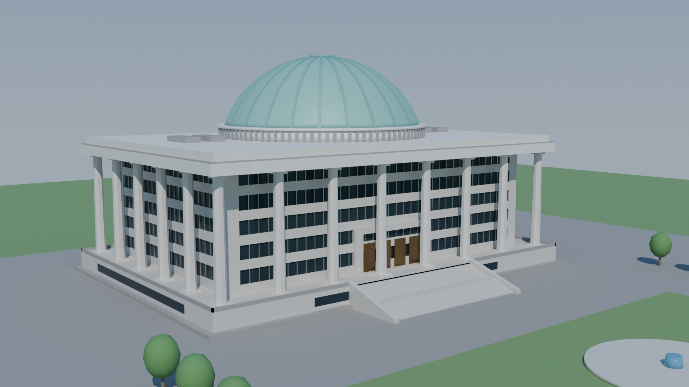
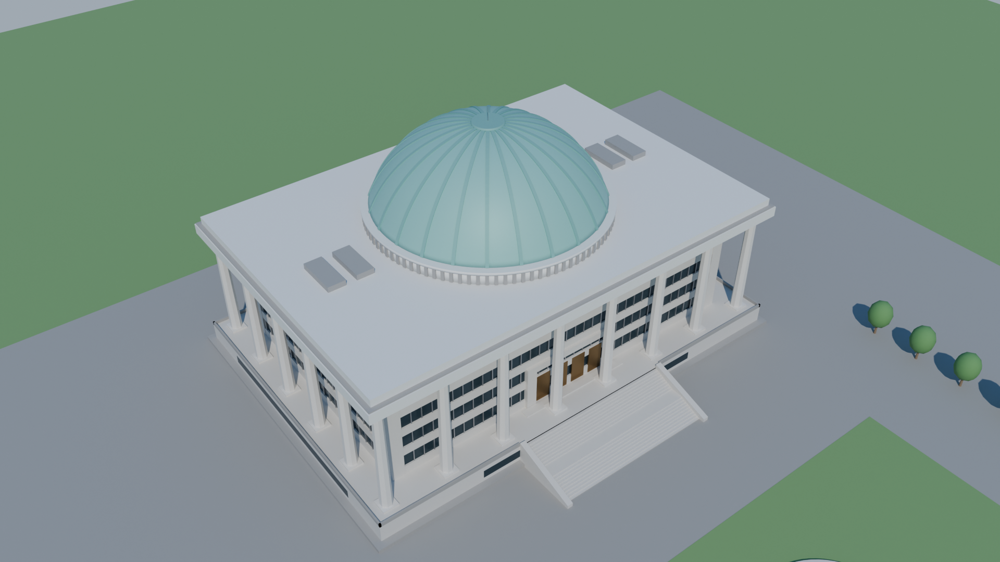
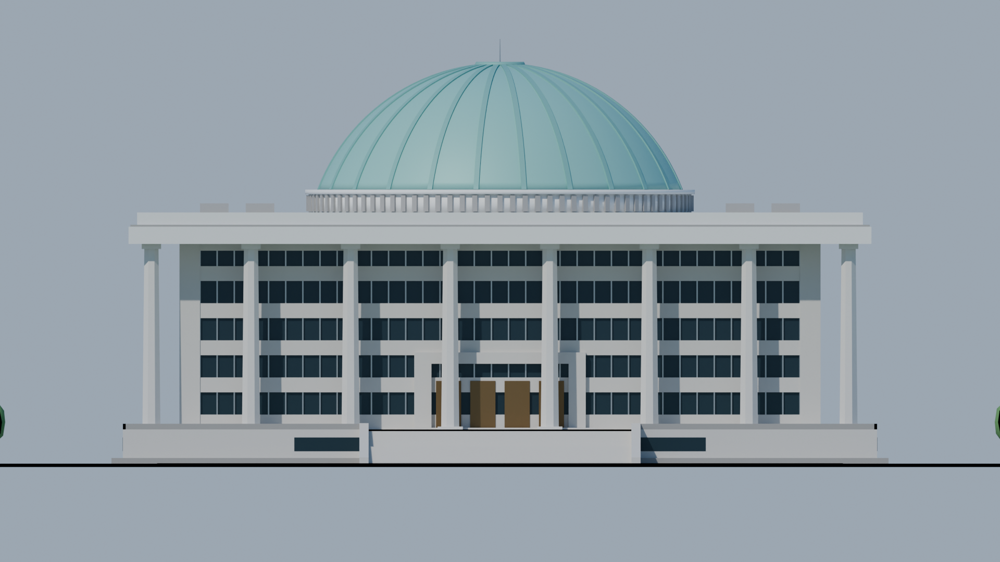

렌더 (Cycles, 1920×1080)



치수 근거
| 항목 | 값 | 모델에 반영한 방식 |
|---|---|---|
| 본관 평면 | 122 × 81 m | 열주 중심선 기준. 외벽은 5.5 m 안쪽, 처마는 4 m 바깥. |
| 열주 | 24개 · 32.5 m | 8각 화강석 기둥. 앞·뒤 8개씩(전면 8개 = 팔도), 좌·우 사이 4개씩 = 24절기. 위로 갈수록 살짝 가늘게. |
| 돔 | 밑지름 64 m | 받침 원통 4 m 위에 높이 22 m 구면 캡. 청록색 동판 느낌의 재질, 리브 24개. |
| 전체 높이 | 70 m | 기단 6 + 열주 32.5 + 처마·파라펫 5.5 + 받침 4 + 돔 22. |
| 층수 | 지상 6층 | 1층은 기단 안, 기단 위 5개 층 × 6.5 m. 층마다 화강석 띠와 창 띠. |
창 간격·대계단 폭(46 m)·돔 리브·나무·분수 같은 요소는 사진을 보고 단순화한 값입니다. 실측치는 아니며, 스크립트 맨 위 상수를 바꿔 다시 실행하면 됩니다.
직접 만들기
# Blender GUI: Scripting 탭에서 build_national_assembly.py 열고 ▶ 실행
# 헤드리스
blender -b -P build_national_assembly.py -- --out ./out --blend --glb --render
# Blender 없이 (pip 의 bpy 휠, 4 코어 CPU 기준 렌더 3장에 몇 분)
pip install bpy
python build_national_assembly.py --out ./out --blend --glb --render- build_podium 기단, 지상 1층 창 띠, 정면 대계단(단면을 X 방향으로 밀어낸 한 덩어리), 경사 난간벽
- build_body 유리 커튼월, 층마다 화강석 스팬드럴, 세로 멀리언, 정면 출입구(포털·청동문)
- build_columns 주초·8각 주신·주두 24개를 메시 하나로
- build_roof 처마 슬래브, 그림자 홈, 파라펫, 옥상 설비
- build_dome 받침 원통과 루버, 구면 캡 돔, 리브, 꼭대기 마감과 피뢰침
- build_site 잔디·광장·분수·가로수 (
--no-site로 생략) - build_lighting_and_cameras 하늘 그라데이션 월드, 태양광, 카메라 3대